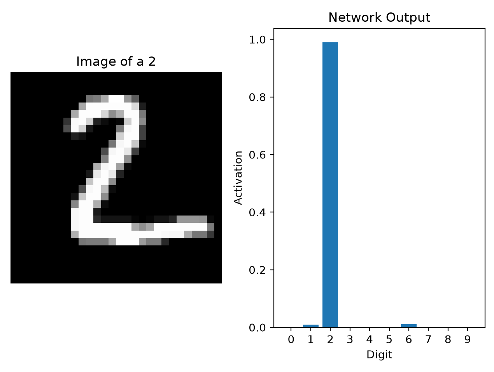
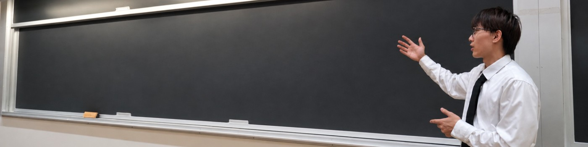
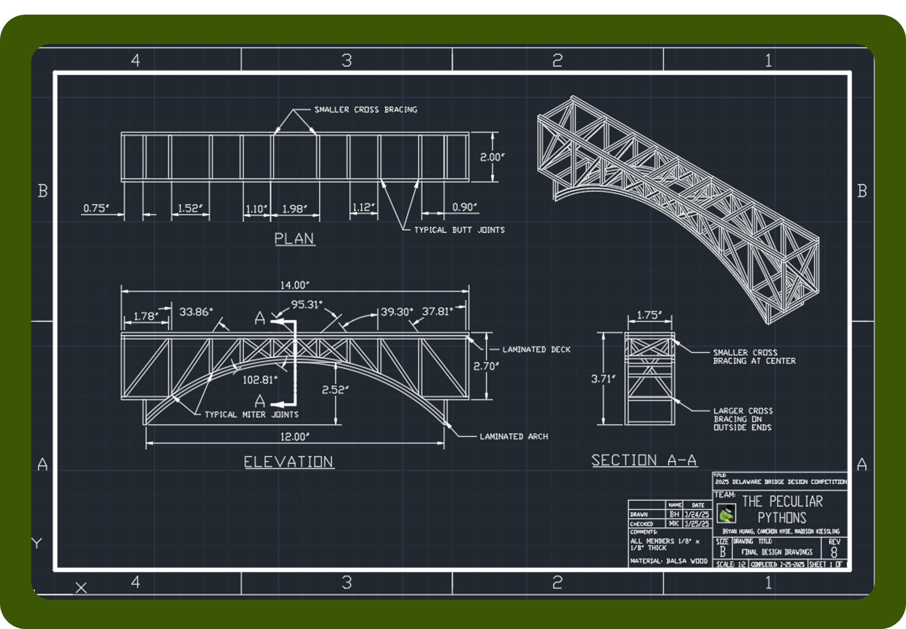

Machine learning · 2026
Neural network from scratch
A NumPy multilayer perceptron with hand-derived backpropagation, a binary MNIST parser, and custom SGD.
~94.2% test accuracy
View code ↗
Amherst, Massachusetts
Computer science at UMass Amherst
Exploring machine learning.
Building the systems behind it.
I’m a computer science student and AI research assistant in the DREAM Lab. My work spans GPU memory scheduling, machine learning from first principles, and engineering through simulation and physical testing.
Learning through building

Machine learning · 2026
A NumPy multilayer perceptron with hand-derived backpropagation, a binary MNIST parser, and custom SGD.
~94.2% test accuracy
View code ↗Applied machine learning · 2026
A complete Scikit-Learn workflow with custom feature engineering, leakage prevention, and model comparison.
0.894 cross-validation ROC-AUC
View code ↗
Engineering · 2023–2025
Three years of bridge design, finite element analysis, and fabrication. First place at the Delaware Bridge Design Competition.
Read the engineering case study →Research & leadership
UMass Amherst · DREAM Lab
University of Massachusetts Amherst Admissions · Sunderland, MA
UMass Student Government Association · Academic Oversight, Ways & Means
Academic foundation
B.S. in Computer Science · GPA: 3.89/4.00
Engineering Design Technology · GPA: 4.00/4.00
Tools I work with
Start a conversation
Interested in my research, projects, or background? I’d be happy to talk.